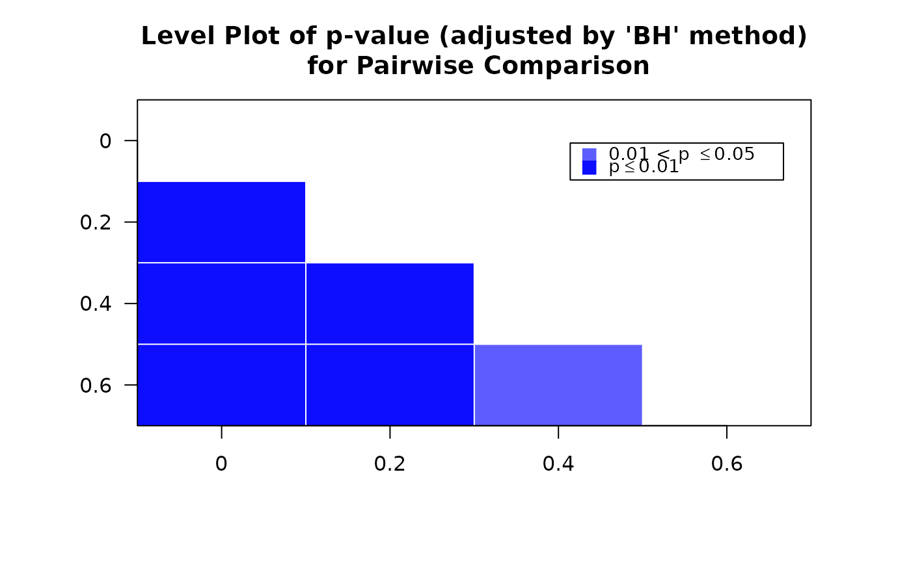
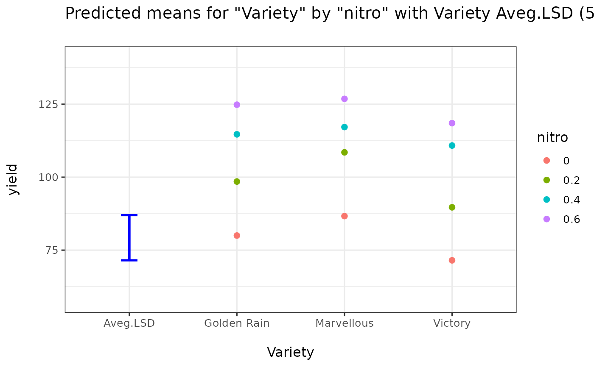
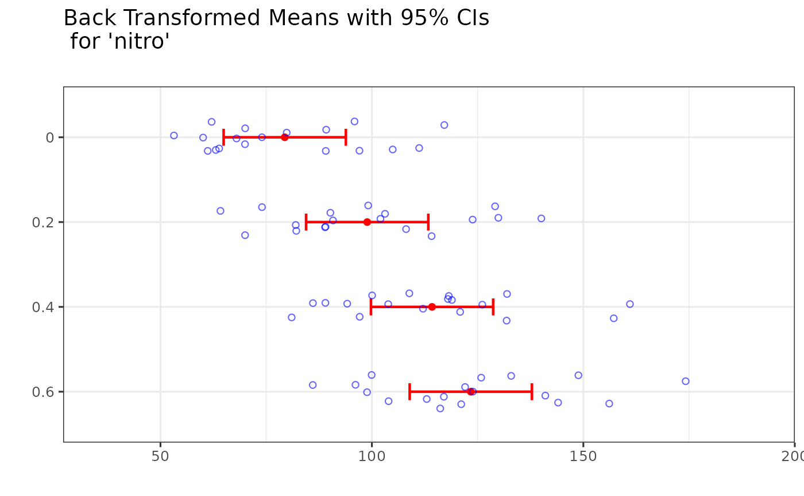
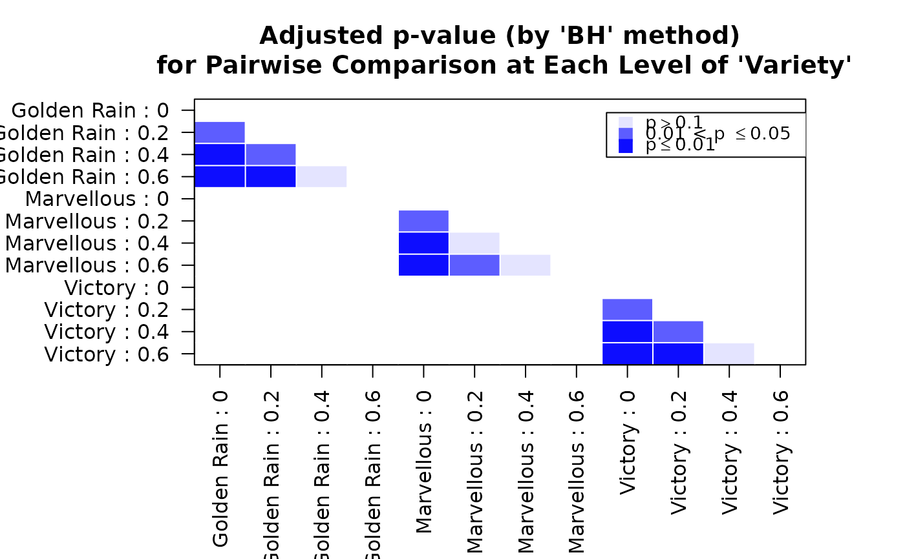
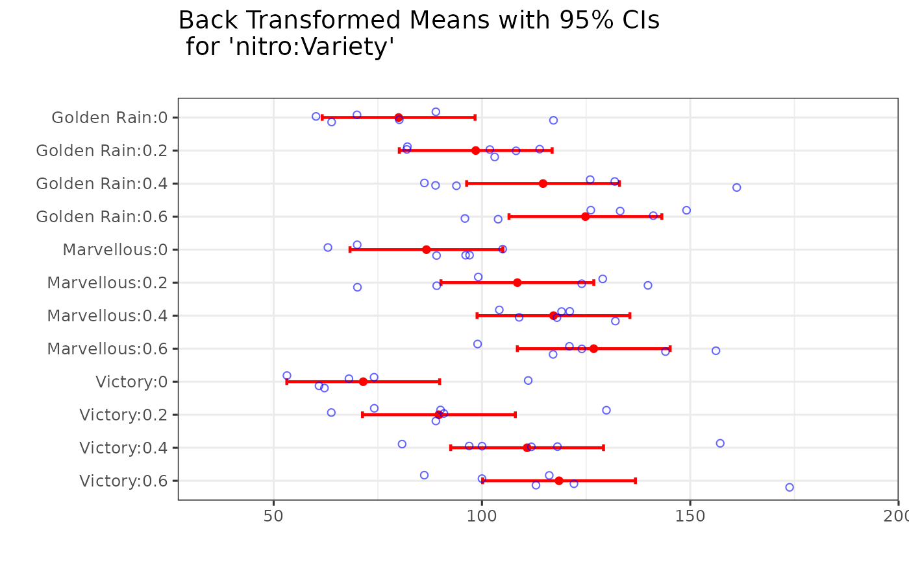
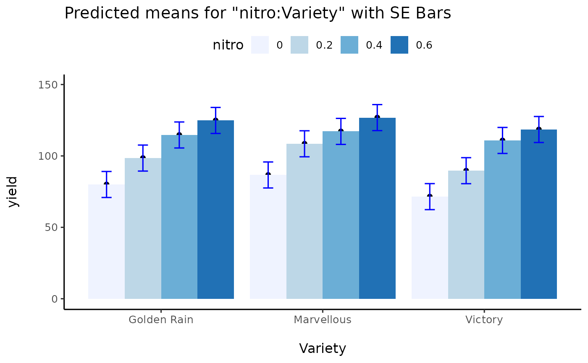

This function obtains predicted means, SE of means, SED of means, LSDs and plots of means
with SE bar or LSD bar for parametric models such as aov, lm,
glm, gls, lme, and lmer. The function also perfomrs pairwise comparisons
and permutation tests.
Usage
predictmeans(model, modelterm, data=NULL, pairwise=FALSE, atvar=NULL, adj="none", Df=NULL,
lsd_bar=TRUE, level=NULL, covariate=NULL, meandecr=NULL, letterCI=FALSE, trans = I,
transOff = 0, responsen=NULL, count=FALSE, plotord=NULL, lineplot=TRUE, plottitle=NULL,
plotxlab=NULL, plotylab=NULL, which.plots = c("mean", "pval", "back"),
mplot=NULL, barplot=NULL, pplot=NULL, bkplot=NULL, plot=TRUE, jitterv=0.2, basesz=12, prtnum=TRUE, prtplt=TRUE, newwd=FALSE, permlist=NULL,
ncore=3, ndecimal=4, cov_reduce=mean, exclude=NULL, vcov_adjust=TRUE,
weights=c("equal", "proportional", "outer", "cells", "flat"),
df_method=c("auto", "Kenward-Roger", "Satterthwaite", "containment"))Arguments
- model
Model object returned by
aov,lm,glm,gls,lme,lmer,glmer,glmmTMBandgam(package mgcv), or asemiregfit. For asemiregfit the means include the smooth terms (assemipred), at the covariates' means or at the values ofcovariate(a named vector, e.g.c(construction.date = 1980)); the result holds only themeans,pairsandsettingstables, with normal-based tests and anyadj.- modelterm
Name (in "quotes") for indicating which factor term's predicted mean to be calculated. The
modeltermmust be factors and given exactly as it appears in the printed model, e.g. "A" or "A:B".- data
In some cases, you need to provide the data set used in model fitting, especially when you have applied some variable trnasformation in the model.
- pairwise
An option for showing pair-wise LSDs and p-values, or not. The default is FALSE.
- atvar
When
pairwise = TRUE, a quoted name indicating within levels of which variable inmodeltermthe multiple comparison will be performed.- adj
Name (in "quote") for indicating a method for adjusting p-values of pairwise comparisons. The choices are "none", "tukey", "holm", "hochberg", "hommel", "bonferroni", "BH", "BY", "fdr", "sidak", "scheffe" and "mvt". "sidak", "scheffe" (rank of the family: number of means - 1) and "mvt" (single-step multivariate t, the exact counterpart of SAS
ADJUST=SIMULATE; needs package mvtnorm) are as in emmeans. Withpermlist, "tukey" and "mvt" give the single-step max-|t| adjustment of the permutation p-values (the permutation version of Tukey's test: each pair's |t| is compared with the largest |t| of the family in each permuted data set), and "westfall" the step-down max-|t| of Westfall and Young (1993), which is uniformly more powerful; both use the correlation between the comparisons. "westfall" needspermlist; "scheffe" is not available with it. The default method is "none"; letter case does not matter ("Tukey" works). Note that LSD can't be adjusted except for "bonferroni" method.- Df
A degree of freedom for calculating LSD. For the above models, Df is obtained from the function automatically.
- lsd_bar
A logical variable to indicate to print an average LSD or SED bar on the means plot. The default is TRUE.
- level
A significant level for calculating LSD, CI etc. The default value is 0.05.
- covariate
A numerical vector to specify values of covariates for calculating predicted means. The default values are the means of the associated covariates.
- meandecr
A logical variable to indicate whether to print letters for multiple comparisons by decreasing order of means in the mean_table. The default is NULL which indicates the mean order follows the associated factor levels.
- letterCI
A logical variable to indicate printed letters for multiple comparisons by whether or not CI overlap in the mean_table. The default is FALSE. With
level = NULLthe CIs are 83.4% CIs: for two uncorrelated means with equal SEs they fail to overlap when the means differ at about the 5% level. Otherwise overlap only approximates the pairwise test: it finds fewer differences when the means are positively correlated, as in most mixed models, and more when their SEs differ (Maghsoodloo and Huang, 2010). WithletterCI = TRUE,levelsets the CIs (e.g.level = 0.05gives 95% CIs),adjis "none", and withatvarthe letters compare the means within eachatvargroup. The note under the mean table gives the CI level and the approximate test level.- trans
A function object for calculating the back transformed means, e.g.
trans=exp.- transOff
When you use
trans=exp(x+1), thentransOff=1, the default is 0.- responsen
Name (in "quotes") of the back transformed response variable in the
model.- count
An option for indicating the back transformed mean values are counts or not. The default is FALSE.
- plotord
A numeric (or character) vector specifying the order of plotting for two or three way interaction (e.g.
plotord = c(2, 1, 3)orplotord = c("B", "A", "C")will put the second variable 'B' inmodeltermon theXaxis, the first variable 'A' as the grouping variable, and the third one 'C' as the panel variable). The defaults arec(1, 2)andc(1, 2, 3)for two and three way interactions.- lineplot
An option for drawing a line chart, or dot chart. The default is TRUE.
- plottitle
A character vector specifying the main title for plot(s). The default is NULL.
- plotxlab
A character vector specifying the x label for plot(s). The default is NULL.
- plotylab
A character vector specifying the y label for plot(s). The default is NULL.
- which.plots
Which plots to draw: any of
"mean"(means plot),"bar"(bar chart),"pval"(p-value plot, when there are more than six p-values) and"back"(back-transformed plot). The default isc("mean", "pval", "back").- mplot
Deprecated, use
which.plots. An option for drawing a means plot, or not.- barplot
Deprecated, use
which.plots. An option for drawing a bar chart, or not.- pplot
Deprecated, use
which.plots. An option for drawing a p-values plot, or not.- bkplot
Deprecated, use
which.plots. An option for drawing back transformed plot, or not.- plot
An option for drawing plots, or not. The default is TRUE.
- jitterv
A degree of jitter in x and y direction in the back transformed means graph. The default is zero.
- basesz
The base font size. The default is 12.
- prtnum
An option for printing covariate information on the screen, or not. The default is TRUE.
- prtplt
An option for printing plots on the screen, or not. The default is TRUE.
- newwd
A logical variable to indicate whether to print graph in a new window. The default is FALSE.
- permlist
A model parameter list produced by the function
permmodels. Whenpermlist != NULL, the optionDfwill be non-functional. This is a key option for pairwise comparisons via permutation tests. With the result ofpermmodels(method = "freedman-lane")(lmandaovmodels), each pair is tested by Freedman-Lane permutations of the model in which that pair's means are equal. With apermlist,vcov_adjustis not used: the observed t statistics are compared with those of the permuted refits, which use the unadjusted covariance.- ncore
Number of core for parallel computing when
permlist != NULL, the default value is 3.- ndecimal
An option for specifying number of decimal point to be print at predicted means table. The default is 4.
- cov_reduce
How covariates that are not varied are handled when building the predicted means: a function such as
mean(the default) ormedian, or"average"to average the predictions over the observed covariate values (e.g. means adjusted for a spatial smooth in agam). SeeKmatrix.- exclude
For
gammodels: smooth terms to leave out of the predictions. The default excludes random-effect smooths. SeeKmatrix.- vcov_adjust
For
lmermodels fitted by REML: ifTRUE(the default), standard errors use the Kenward-Roger adjusted covariance matrix of the fixed effects, as SASDDFM=KRand emmeans do, to go with the Kenward-Roger degrees of freedom.FALSEuses the unadjusted covariance and reproduces results of predictmeans 1.x. It has no effect for other models.- weights
Passed to
Kmatrix: how the cells of the factors that are not inmodeltermare weighted when averaging over them:"equal"(the default; equal weights),"proportional"(weights proportional to the frequencies of those cells in the data, the same for every mean, as SASLSMEANS / OM),"outer"(products of each factor's own frequencies),"cells"(each mean weights the cells by their own frequencies) or"flat"(equal weights over the non-empty cells). The definitions are those of emmeans.- df_method
Denominator degrees of freedom for
lmermodels."auto"(the default) uses Kenward-Roger for REML fits and Satterthwaite for ML fits."containment"gives the SASDDFM=CONTAINdf: the smallest rank contribution to \([X Z]\) of the random effects that containmodelterm, or the residual df when none does; all means and comparisons of the term then share that df, and the unadjusted covariance is used unlessvcov_adjust = TRUEis given. Ignored for other model classes.
Value
- Predicted Means
A table of predicted means.
- Standard Error of Means
A table of standard errors of predicted means.
- Standard Error of Differences
Standard errors of differences between predicted means.
- LSD
Least significant differences between predicted means.
- Pairwise p-value
A matrix with t-values above the diagonal and p-values below the diagonal, or matrix of pairwise comparison p-values for each level of
atvar.- mean_table
A summary of predicted means result including 'Predicted means', 'Standard error', 'Df' and 'CIs'. When
trans!=NULLortrans!=I, a table of back transformed means with CIs are also shown.- predictmeansPlot
ggplot of predicted means.
- predictmeansBKPlot
ggplot of back transformed means.
- predictmeansBarPlot
gg bar plot of predicted means.
- p_valueMatrix
p_value matrix for pairwise comparison.
- means
A data frame with one row per predicted mean and fixed column names: the factor (and covariate) columns,
estimate,std.error,df,conf.low,conf.high; when the means are back-transformed alsoresponse,response.std.error(delta method, as emmeans withtype = "response"),response.conf.lowandresponse.conf.high;group(letters, when pairwise comparisons are made),n(number of observations) andestimable. Values are not rounded. Also returned bytidy()andas.data.frame().- pairs
A data frame with one row per pairwise comparison:
level1,level2,by(the level ofatvar, when given;NAfor pairs across levels),estimate(mean oflevel1minus mean oflevel2),std.error,df,statistic(t),p.value,p.adj(adjusted byadj, within each level ofatvarwhen given),lsdandp.method; for a log link ortrans = expalsoratio(of the back-transformed means,exp(estimate)),ratio.conf.lowandratio.conf.high, and for a logit linkodds.ratiowith its limits.- settings
A list with the options used: model term, significance level, adjustment method,
atvar, degrees-of-freedom method,vcov_adjust, number of permutations, covariate values, model class and package version.
The result has class c("predictmeans", "pdmlist"). Printing shows the same output as earlier versions;
the means, pairs and settings slots are not printed.
Note
The predictmeans function becomes confused if a factor or covariate is changed to the other
in a model formula. Consequently, formulae that include calls as.factor, factor, or numeric
(e.g. as.factor(income)) will cause errors. Instead, create the modified variables outside of the model
formula (e.g., fincome <- as.factor(income)) and then use them in the model formula.
Factors cannot have colons in level names (e.g., "level:A") for the legacy tables; the predictmeans
function will confuse the colons with interactions; rename levels to avoid colons. The means and
pairs tables are not affected.
For predictmeans function, it is assumed that methods coef, vcov, model.matrix, model.frame and terms are available for model.
References
Torsten Hothorn, Frank Bretz and Peter Westfall (2008), Simultaneous Inference in General Parametric Models. Biometrical, Journal 50(3), 346–363.
Welham, S., Cullis, B., Gogel, B., Gilmour, A., & Thompson, R. (2004), Prediction in linear mixed models, Australian and New Zealand Journal of Statistics, 46(3), 325-347.
Vanessa, C. (05 October 2022), Confidence tricks: the 83.4% confidence interval for comparing means, https://vsni.co.uk/blogs/confidence_trick.
Maghsoodloo, S. and Huang, C.-Y. (2010), Comparing the overlapping of two independent confidence intervals with a single confidence interval for two normal population parameters, Journal of Statistical Planning and Inference, 140(11), 3295-3305.
Examples
library(predictmeans)
ftable(xtabs(yield ~ Block+Variety+nitro, data=Oats))
#> nitro 0 0.2 0.4 0.6
#> Block Variety
#> VI Golden Rain 89 82 86 104
#> Marvellous 97 99 119 121
#> Victory 53 74 118 113
#> V Golden Rain 80 82 94 126
#> Marvellous 63 70 109 99
#> Victory 62 90 100 116
#> III Golden Rain 60 102 89 96
#> Marvellous 89 129 132 124
#> Victory 68 64 112 86
#> IV Golden Rain 64 103 132 133
#> Marvellous 70 89 104 117
#> Victory 74 89 81 122
#> II Golden Rain 70 108 126 149
#> Marvellous 96 124 121 144
#> Victory 61 91 97 100
#> I Golden Rain 117 114 161 141
#> Marvellous 105 140 118 156
#> Victory 111 130 157 174
Oats$nitro <- factor(Oats$nitro)
fm <- lme(yield ~ nitro*Variety, random=~1|Block/Variety, data=Oats)
# fm <- lmer(yield ~ nitro*Variety+(1|Block/Variety), data=Oats)
predictmeans(fm, "nitro", adj="BH")



#> $`Predicted Means`
#> nitro
#> 0 0.2 0.4 0.6
#> 79.3889 98.8889 114.2222 123.3889
#>
#> $`Standard Error of Means`
#> All means have the same SE
#> 7.17468
#>
#> $`Standard Error of Differences`
#> Max.SED Min.SED Aveg.SED
#> 4.435758 4.435758 4.435758
#>
#> $LSD
#> Max.LSD Min.LSD Aveg.LSD
#> 8.93407 8.93407 8.93407
#> attr(,"Significant level")
#> [1] 0.05
#> attr(,"Degree of freedom")
#> [1] 45
#>
#> $`Pairwise p-value`
#> 0 0.2 0.4 0.6
#> 0 1.0000 -4.3961 -7.8528 -9.9194
#> 0.2 0.0001 1.0000 -3.4568 -5.5233
#> 0.4 0.0000 0.0014 1.0000 -2.0665
#> 0.6 0.0000 0.0000 0.0446 1.0000
#> attr(,"Degree of freedom")
#> [1] 45
#> attr(,"Note")
#> [1] "The matrix has t-value above the diagonal, p-value (adjusted by 'BH' method) below the diagonal"
#>
#> $mean_table
#> $mean_table$Table
#> nitro Mean SE Df LL(95%) UL(95%) LetterGrp
#> 1 0 79.3889 7.17468 45 64.9383 93.8394 A
#> 2 0.2 98.8889 7.17468 45 84.4383 113.3394 B
#> 3 0.4 114.2222 7.17468 45 99.7717 128.6728 C
#> 4 0.6 123.3889 7.17468 45 108.9383 137.8394 D
#>
#> $mean_table$Note
#> [1] "Letter-based representation of pairwise comparisons at significant level '0.05'"
#>
#>
predictmeans(fm, "nitro:Variety", atvar="Variety", adj="BH", line=FALSE)

 #> $`Predicted Means`
#> Variety Golden Rain Marvellous Victory
#> nitro
#> 0 80.0000 86.6667 71.5000
#> 0.2 98.5000 108.5000 89.6667
#> 0.4 114.6667 117.1667 110.8333
#> 0.6 124.8333 126.8333 118.5000
#>
#> $`Standard Error of Means`
#> All means have the same SE
#> 9.10696
#>
#> $`Standard Error of Differences`
#> Max.SED Min.SED Aveg.SED
#> 9.715028 7.682958 9.160827
#> attr(,"For the Same Level of Factor")
#> nitro Variety
#> Aveg.SED 9.715028 7.682958
#> Min.SED 9.715028 7.682958
#> Max.SED 9.715028 7.682958
#>
#> $LSD
#> Max.LSD Min.LSD Aveg.LSD
#> 19.56707 15.47427 18.45085
#> attr(,"For the Same Level of Factor")
#> nitro Variety
#> Aveg.LSD 19.56707 15.47427
#> Min.LSD 19.56707 15.47427
#> Max.LSD 19.56707 15.47427
#> attr(,"Significant level")
#> [1] 0.05
#> attr(,"Degree of freedom")
#> [1] 45
#>
#> $`Pairwise comparison p-value (adjusted by 'BH' method)`
#> [1] "For variable 'nitro' at each level of 'Variety'"
#>
#> $`Golden Rain`
#> 0 0.2 0.4 0.6 Group
#> 0 1 A
#> 0.2 0.0303 1 B
#> 0.4 0.0001 0.0492 1 C
#> 0.6 0.0001 0.0026 0.1924 1 C
#>
#> $Marvellous
#> 0 0.2 0.4 0.6 Group
#> 0 1 A
#> 0.2 0.0134 1 B
#> 0.4 0.0008 0.2653 1 BC
#> 0.6 0.0001 0.0319 0.2578 1 C
#>
#> $Victory
#> 0 0.2 0.4 0.6 Group
#> 0 1 A
#> 0.2 0.0269 1 B
#> 0.4 0.0001 0.0127 1 C
#> 0.6 0.0001 0.001 0.3237 1 C
#>
#> $mean_table
#> $mean_table$Table
#> Variety nitro Mean SE Df LL(95%) UL(95%) LetterGrp
#> 1 Golden Rain 0 80.0000 9.10696 45 61.6577 98.3423 A
#> 4 Golden Rain 0.2 98.5000 9.10696 45 80.1577 116.8423 B
#> 7 Golden Rain 0.4 114.6667 9.10696 45 96.3243 133.0090 C
#> 10 Golden Rain 0.6 124.8333 9.10696 45 106.4910 143.1757 C
#> 2 Marvellous 0 86.6667 9.10696 45 68.3243 105.0090 A
#> 5 Marvellous 0.2 108.5000 9.10696 45 90.1577 126.8423 B
#> 8 Marvellous 0.4 117.1667 9.10696 45 98.8243 135.5090 BC
#> 11 Marvellous 0.6 126.8333 9.10696 45 108.4910 145.1757 C
#> 3 Victory 0 71.5000 9.10696 45 53.1577 89.8423 A
#> 6 Victory 0.2 89.6667 9.10696 45 71.3243 108.0090 B
#> 9 Victory 0.4 110.8333 9.10696 45 92.4910 129.1757 C
#> 12 Victory 0.6 118.5000 9.10696 45 100.1577 136.8423 C
#>
#> $mean_table$Note
#> [1] "Letter-based representation of pairwise comparisons at significant level '0.05' at each level of Variety"
#>
#>
predictout <- predictmeans(fm, "nitro:Variety", atvar="Variety", adj="BH",
barplot=TRUE, line=FALSE)
#> Warning: barplot is deprecated: use which.plots = c("mean", "bar", "pval", "back") instead.
#> $`Predicted Means`
#> Variety Golden Rain Marvellous Victory
#> nitro
#> 0 80.0000 86.6667 71.5000
#> 0.2 98.5000 108.5000 89.6667
#> 0.4 114.6667 117.1667 110.8333
#> 0.6 124.8333 126.8333 118.5000
#>
#> $`Standard Error of Means`
#> All means have the same SE
#> 9.10696
#>
#> $`Standard Error of Differences`
#> Max.SED Min.SED Aveg.SED
#> 9.715028 7.682958 9.160827
#> attr(,"For the Same Level of Factor")
#> nitro Variety
#> Aveg.SED 9.715028 7.682958
#> Min.SED 9.715028 7.682958
#> Max.SED 9.715028 7.682958
#>
#> $LSD
#> Max.LSD Min.LSD Aveg.LSD
#> 19.56707 15.47427 18.45085
#> attr(,"For the Same Level of Factor")
#> nitro Variety
#> Aveg.LSD 19.56707 15.47427
#> Min.LSD 19.56707 15.47427
#> Max.LSD 19.56707 15.47427
#> attr(,"Significant level")
#> [1] 0.05
#> attr(,"Degree of freedom")
#> [1] 45
#>
#> $`Pairwise comparison p-value (adjusted by 'BH' method)`
#> [1] "For variable 'nitro' at each level of 'Variety'"
#>
#> $`Golden Rain`
#> 0 0.2 0.4 0.6 Group
#> 0 1 A
#> 0.2 0.0303 1 B
#> 0.4 0.0001 0.0492 1 C
#> 0.6 0.0001 0.0026 0.1924 1 C
#>
#> $Marvellous
#> 0 0.2 0.4 0.6 Group
#> 0 1 A
#> 0.2 0.0134 1 B
#> 0.4 0.0008 0.2653 1 BC
#> 0.6 0.0001 0.0319 0.2578 1 C
#>
#> $Victory
#> 0 0.2 0.4 0.6 Group
#> 0 1 A
#> 0.2 0.0269 1 B
#> 0.4 0.0001 0.0127 1 C
#> 0.6 0.0001 0.001 0.3237 1 C
#>
#> $mean_table
#> $mean_table$Table
#> Variety nitro Mean SE Df LL(95%) UL(95%) LetterGrp
#> 1 Golden Rain 0 80.0000 9.10696 45 61.6577 98.3423 A
#> 4 Golden Rain 0.2 98.5000 9.10696 45 80.1577 116.8423 B
#> 7 Golden Rain 0.4 114.6667 9.10696 45 96.3243 133.0090 C
#> 10 Golden Rain 0.6 124.8333 9.10696 45 106.4910 143.1757 C
#> 2 Marvellous 0 86.6667 9.10696 45 68.3243 105.0090 A
#> 5 Marvellous 0.2 108.5000 9.10696 45 90.1577 126.8423 B
#> 8 Marvellous 0.4 117.1667 9.10696 45 98.8243 135.5090 BC
#> 11 Marvellous 0.6 126.8333 9.10696 45 108.4910 145.1757 C
#> 3 Victory 0 71.5000 9.10696 45 53.1577 89.8423 A
#> 6 Victory 0.2 89.6667 9.10696 45 71.3243 108.0090 B
#> 9 Victory 0.4 110.8333 9.10696 45 92.4910 129.1757 C
#> 12 Victory 0.6 118.5000 9.10696 45 100.1577 136.8423 C
#>
#> $mean_table$Note
#> [1] "Letter-based representation of pairwise comparisons at significant level '0.05' at each level of Variety"
#>
#>
predictout <- predictmeans(fm, "nitro:Variety", atvar="Variety", adj="BH",
barplot=TRUE, line=FALSE)
#> Warning: barplot is deprecated: use which.plots = c("mean", "bar", "pval", "back") instead.




names(predictout)
#> [1] "Predicted Means"
#> [2] "Standard Error of Means"
#> [3] "Standard Error of Differences"
#> [4] "LSD"
#> [5] "Pairwise comparison p-value (adjusted by 'BH' method)"
#> [6] "Golden Rain"
#> [7] "Marvellous"
#> [8] "Victory"
#> [9] "mean_table"
#> [10] "predictmeansPlot"
#> [11] "predictmeansBarPlot"
#> [12] "p_valueMatrix"
#> [13] "means"
#> [14] "pairs"
#> [15] "settings"
print(predictout$predictmeansPlot)
#> $meanPlot
 #>
#> $ciPlot
#>
print(predictout$predictmeansBarPlot)
#>
#> $ciPlot
#>
print(predictout$predictmeansBarPlot)
